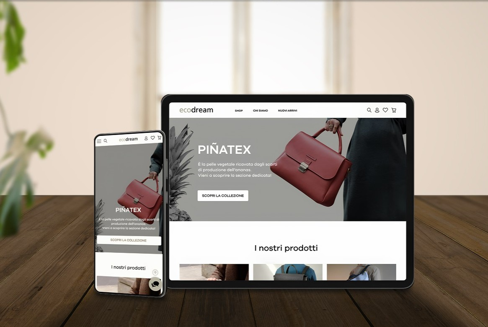
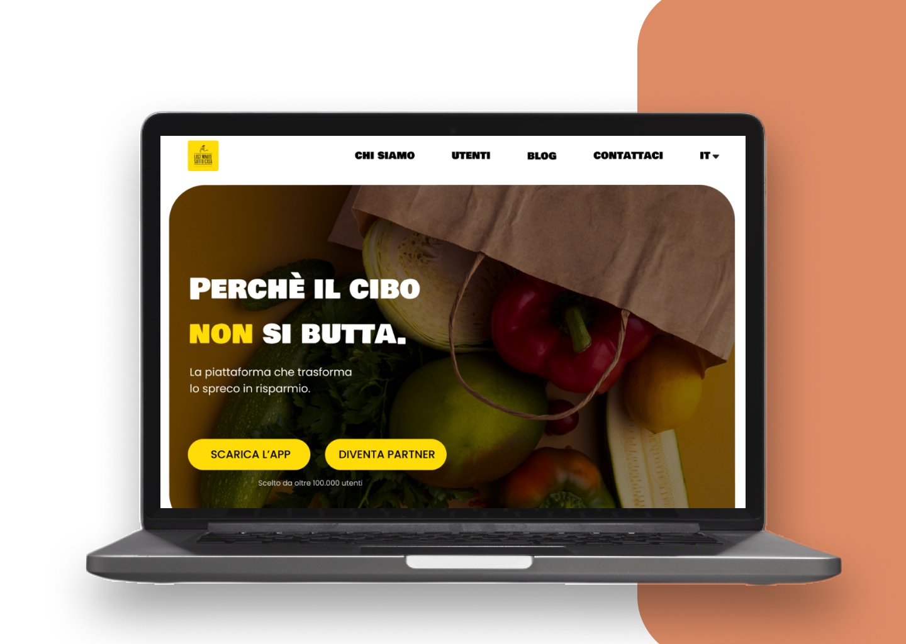
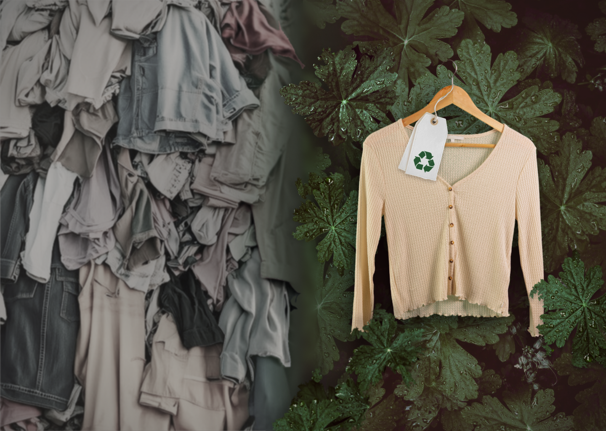
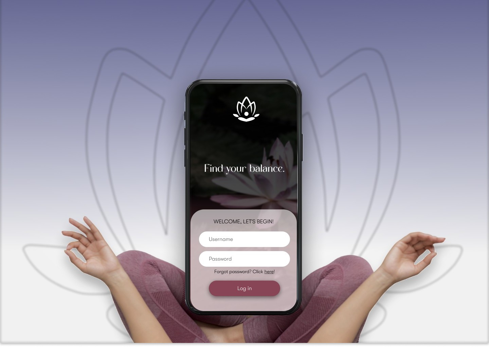

Progetti

Last Minute Sotto Casa
SCOPRI IL PROGETTO
LookBook
SCOPRI IL PROGETTO

Junior UX/UI Designer
Trasformo idee in esperienze digitali intuitive e coinvolgenti
Il concept
Questo portfolio nasce dall’idea di costruire non solo un sito, ma uno spazio coerente con il mio modo di progettare: chiaro nella struttura, ma anche riconoscibile dal punto di vista visivo.
La copertina è ispirata alla Nascita di Venere di Botticelli, nella reinterpretazione di José Manuel Ballester, in cui i personaggi scompaiono e resta soltanto l’ambiente. Ho scelto questa immagine perché non volevo una decorazione, ma uno spazio d’ingresso: una scena visiva che suggerisse subito l’idea di attraversare un luogo, più che di entrare in una semplice pagina.
Anche il logo segue la stessa logica. È un monogramma costruito sulle iniziali I e M: la I richiama una colonna classica, mentre la M ha linee più morbide ispirate allo stile Liberty. Insieme, queste forme tengono in equilibrio rigore e sensibilità visiva, due aspetti che sento centrali anche nel mio approccio al design.
La palette riprende i toni della copertina per mantenere continuità tra immagine e interfaccia. Ho scelto colori profondi e desaturati, senza sovraccaricare visivamente la navigazione.
Arrivo da anni di lavoro a contatto con le persone e ho imparato che, quando qualcosa non è chiaro, si crea distanza.
Nel digitale porto lo stesso sguardo: parto dal problema, metto ordine e progetto percorsi semplici e leggibili.
Amo l’arte in tutte le sue forme, e nello UX/UI ho trovato il punto in cui estetica e struttura riescono davvero a incontrarsi.



